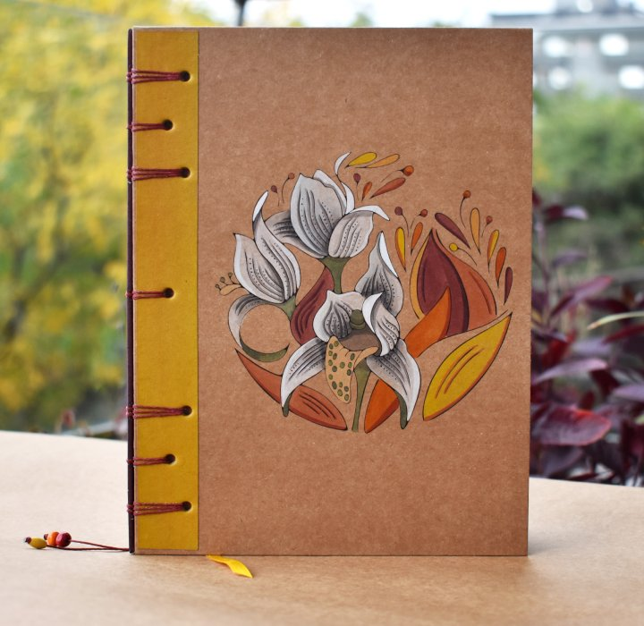
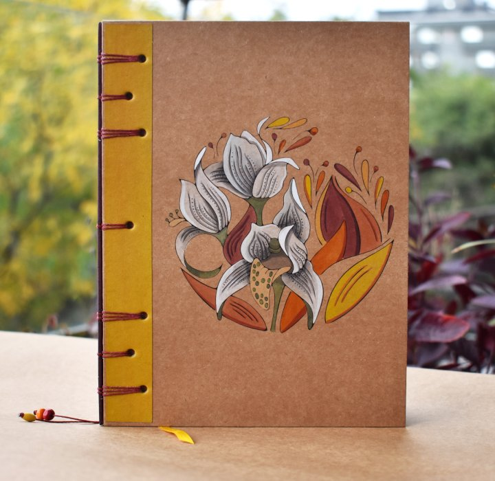
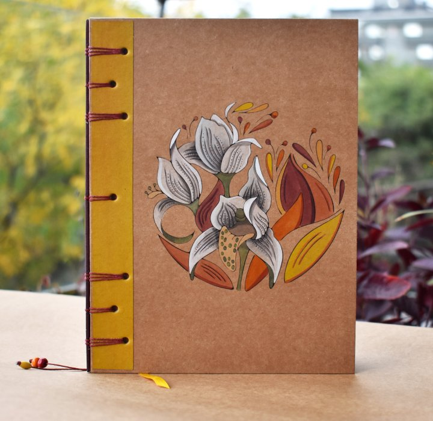

Cuadernos y agendas
Tené en cuenta que no todos los cuadernos y agendas mostrados necesariamente estén en stock, aquellos que si lo estén se encuentran en Productos
 



Tené en cuenta que no todos los cuadernos y agendas mostrados necesariamente estén en stock, aquellos que si lo estén se encuentran en Productos
